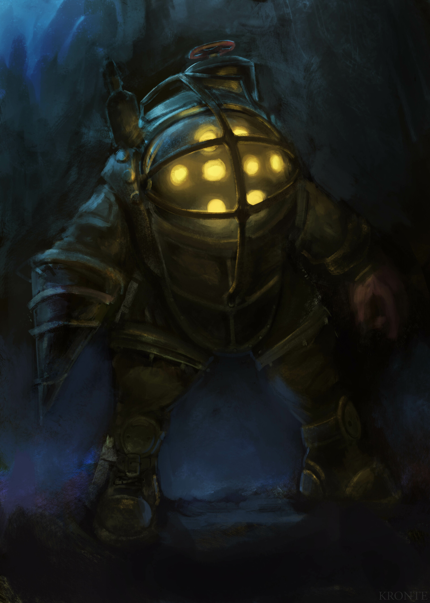
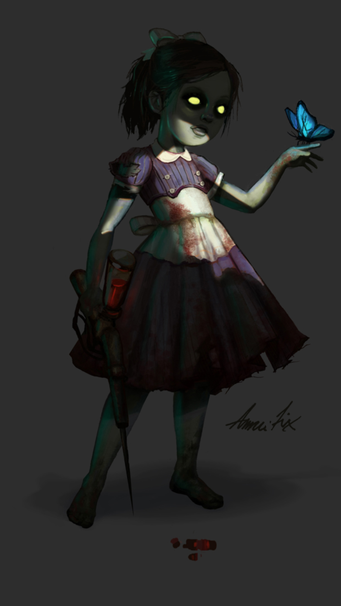
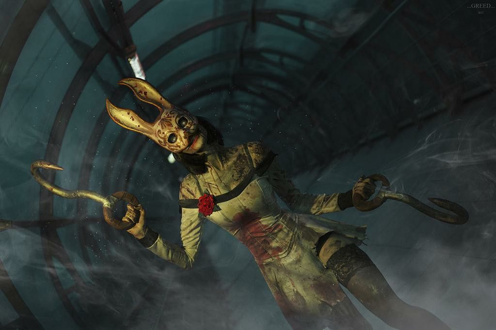

Just a taste of what awaits below
If you want to survive your dystopian Atlantic adventure you'll have to think and act quickly. There are substantially more threats than friends, however don't let that detour you! Those friends are helping from the shadows, the science that crippled the city can be harnessed for yourself, and even the environment seems to have your best interests in mind...sometimes.
Mr.Bubbles
More accurately known as a Big Daddy, these super humans in advanced diver suits will stop at nothing to protect their little sister. While they won't attack on sight, they do stand in your way as you strive to grow powerful enough to escape. These behemoths come in a few varieties and will have to be defeated before you can get near their little sister. The creatures that inhabit these suits were once human, but have been broken by pychological and genetic manipulation.

The Little Sisters
Innocence stolen by society, they cling to their protector hunted by Raptures inhabitants. Will you help them escape, are you strong enough to save them, or can they be saved at all? Created by geneticist Bridgid Tenenbaum, these little girls were genetically mutated and pychologically conditioned to search for and recover ADAM from the deceased. Initially the girls were taken from orphanages, but as the need for ADAM grew greater little girls were stolen from the streets.

Splicers

The majority of Rapture's ADAM crazed inhabitants, lurking around every corner, driven mad with genetic alterations, and hungry for more. There are many varieties of splicer, and you'll need every advantage possible to navigate their crumbling home. Citizens of Rapture encouraged to improve their lives with genetic modification driven mad, are they villains or victims?